แนะนำการใช้งาน STM32Cube for VS Code: Nucleo F446RE Board#
Keywords: VS Code IDE, STM32CubeMX, STM32F4, ST Nucleo Boards, Nucleo F446RE
▷ STM32Cube for VS Code#
ในอดีต บริษัท STMicroelectronics (ST) ผู้ผลิตไมโครคอนโทรลเลอร์ตระกูล STM32 ได้มีซอฟต์แวร์ประเภท IDE (Integrated Development Environment) ให้เลือกใช้งานหลายตัว เช่น
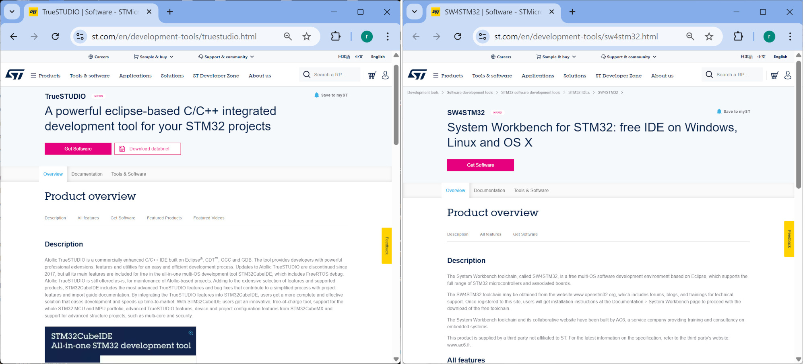
รูป: ข้อมูลเกี่ยวกับซอฟต์แวร์ Atollic TrueSTUDIO และ SW4STM32 บนหน้าเว็บของบริษัท ST
ต่อมาทาง ST ได้รวมเครื่องมือเหล่านี้มาเป็น STM32CubeIDE ซึ่งมีพื้นฐานมาจาก Eclipse C/C++ Development Tools (CDT) Framework และได้รวมซอฟต์แวร์ STM32CubeMX เอาไว้ด้วย ใช้สำหรับการตั้งค่า MCU / MPU สร้างโค้ดเริ่มต้น (Initialization C Code Generator) ผ่านอินเทอร์เฟซแบบกราฟิก
ในเดือนมีนาคม ค.ศ. 2023 ทางบริษัท ST ได้เปิดตัว
STM32Cube for VS Code: stmicroelectronics.stm32-vscode-extension (Version 1.0.0)
เพื่อให้สามารถพัฒนา STM32 บน Visual Studio Code ได้
- เป็นชุดเครื่องมือพัฒนาซอฟต์แวร์สำหรับไมโครคอนโทรลเลอร์ STM32 ที่ทำงานร่วมกับ Visual Studio Code (VS Code) พัฒนาและดูแลโดยบริษัท ST
- ได้ออกแบบให้มีโครงสร้างเหมาะสำหรับทำงานแบบ CLI (Command Line) และแตกต่างจาก STM32CubeIDE ที่เป็น IDE ตัวหลักของ ST
- STM32Cube for VS Code ได้ถูกพัฒนาให้เป็นแพลตฟอร์มแบบแยกส่วน (Modular Toolchain) ที่ได้รวมหลายเครื่องมือเข้าด้วยกันผ่าน VS Code
การใช้งานสำหรับเวอร์ชันแรก ๆ ผู้ใช้จำเป็นต้องติดตั้งโปรแกรมเสริมหลายตัวร่วมกัน เช่น
- STM32CubeCLT
- STM32CubeMX
- STMCUFinder
เวอร์ชันล่าสุด ณ วันที่เขียนข้อความนี้ คือ Version 3.7.0 (15/12/2025) มีการปรับปรุงโครงสร้างซอฟต์แวร์ค่อนข้างมาก เช่น
- เลิกใช้วิธีติดตั้งแบบ STM32CubeCLT
- เปลี่ยนมาใช้เครื่องมือใหม่ชื่อ "STM32Cube Bundle Manager" สำหรับดาวน์โหลดและติดตั้งเครื่องมือย่อยต่าง ๆ ที่จำเป็นโดยอัตโนมัติ
- อย่างไรก็ตาม ผู้ใช้ ยังคงต้องติดตั้ง STM32CubeMX แยกต่างหาก เพื่อใช้ในการสร้างโค้ดเริ่มต้นสำหรับโปรเจกต์
STM32Cube for VS Code แบ่งหน้าที่ของเครื่องมือออกเป็นส่วน ๆ ดังนี้
-
ส่วนติดต่อผู้ใช้แบบ GUI
- ทำงานภายใต้ VS Code เป็นสภาพแวดล้อมหลัก
- รองรับการดีบักในฮาร์ดแวร์ โดยอาศัยส่วนขยาย Cortex-Debug (STM32 VS Code Debugger)
-
การสร้างโค้ด (Code Generation)
- ใช้ STM32CubeMX ของ STMicroelectronics (ต้องดาวน์โหลดและติดตั้งโปรแกรมนี้ด้วย) สำหรับเลือกบอร์ด หรือไมโครคอนโทรลเลอร์ ตั้งค่าการใช้งานวงจรภายใน และการสร้างโค้ดทำผ่าน CubeMX GUI หรือ CubeMX CLI
- ได้โค้ดเริ่มต้นที่ใช้ STM32 HAL (Hardware Abstraction Layer) พร้อมไฟล์ตั้งค่า CMake / Ninja Build
- รองรับการติดตั้งไฟล์สำหรับชิปรุ่นต่าง ๆ โดยใช้ CMSIS-PACK DFPs
-
คอมไพเลอร์ (Compiler)
- ใช้ ARM GNU Toolchain (
arm-none-eabi-gcc) สำหรับ ARM Cortex-M เพื่อคอมไพล์ซอร์สโค้ดภาษา C/C++ ให้เป็นไฟล์ .elf - ใช้ Clangd (แทนที่ IntelliSense แบบเดิม) ซึ่งเป็นเครื่องมือในตระกูล LLVM ที่ทำหน้าที่เป็น C/C++ Language Server เช่น ทำหน้าที่ Autocomplete และตรวจสอบไวยากรณ์โค้ด (Syntax Checking)
- ใช้ ARM GNU Toolchain (
-
ระบบ Build สำหรับโปรเจกต์
- ใช้ CMake สำหรับการจัดการคอมไพล์โค้ดในโปรเจกต์ และ Ninja ซึ่งเป็น Backend สำหรับการทำขั้นตอน Build ที่รวดเร็ว
- รองรับการ Build ที่เลือกได้ว่าจะเป็นแบบ Debug หรือ Release
-
การโปรแกรมและดีบัก (Flash / Debug)
- สามารถใช้ GDB (GNU Debugger) Debug Server ได้ เช่น ST-Link Server และ J-Link GDB Server ใช้งานร่วมกับอุปกรณ์ ST-Link และ J-Link Debug Probe ตามลำดับ
- OpenOCD จะเปิดบริการ GDB Server ให้ GDB Client (เช่น
arm-none-eabi-gdb) เชื่อมต่อเข้ามา - รองรับฟังก์ชันในการดีบัก เช่น Breakpoint, Step / Continue, Register / Memory view และ Peripheral View (โดยใช้ไฟล์ .SVD ของชิปไมโครคอนโทรลเลอร์)
- ST-Link GDB Server รองรับการดีบัก Dual-Core / Multi-Core CPU
▷ บอร์ดไมโครคอนโทรลเลอร์ STM32: ST NUCLEO#
STM32 Nucleo Boards เป็นบอร์ดพัฒนาไมโครคอนโทรลเลอร์ (Microcontroller Development Board) สำหรับชิปตระกูล STM32 ที่ผลิตและดูแลโดยบริษัท STMicroelectronics (ST) โดยตรง ออกแบบมา เพื่อใช้ในการเรียนรู้ การทดลอง และการพัฒนาระบบสมองกลฝังตัว
บอร์ดตระกูล Nucleo ได้รับความนิยมอย่างแพร่หลาย ทั้งในภาคการศึกษาและภาคอุตสาหกรรม ใช้งานร่วมกับเครื่องมือพัฒนาของ ST เช่น
- STM32CubeMX / STM32CubeIDE / STM32Programmer
- STM32Cube for VS Code
บอร์ด STM32 Nucleo มีข้อดีอีกประการหนึ่งคือ มี ST-Link Programmer/Debugger รวมอยู่บนบอร์ด ทำให้ไม่จำเป็นต้องใช้อุปกรณ์ภายนอกในการโปรแกรมหรือดีบัก
▷ การแบ่งกลุ่มของบอร์ด Nucleo#
บอร์ด STM32 Nucleo สามารถแบ่งออกเป็น 3 กลุ่มหลัก ตามขนาดและความสามารถของไมโครคอนโทรลเลอร์ ได้แก่
-
Nucleo-32
- ขนาดเล็ก กะทัดรัด และ Breadboard-friendly
- ใช้ไมโครคอนโทรลเลอร์ STM32 ระดับเริ่มต้น
- เหมาะสำหรับการเรียนรู้พื้นฐานและโปรเจกต์ขนาดเล็ก
-
Nucleo-64
- ขนาดมาตรฐาน, Arduino Uno Shield compatible
- มีขาเชื่อมต่อแบบ Arduin headers
- รองรับไมโครคอนโทรลเลอร์ STM32 หลายตระกูล
-
Nucleo-144
- ขนาดใหญ่กว่าสองกลุ่มแรก และมีจำนวนขา I/O มาก
- รองรับไมโครคอนโทรลเลอร์สมรรถนะสูง
- เหมาะสำหรับงานที่ต้องการทรัพยากรและการเชื่อมต่อจำนวนมาก

รูป: บอร์ด ST Nucleo (Source: STMicroelectronics)
ไมโครคอนโทรลเลอร์ตระกูล STM32 ของบริษัท STMicroelectronics สามารถแบ่งออกเป็นหลายกลุ่มตามระดับสมรรถนะ การใช้พลังงาน และลักษณะการใช้งาน
-
กลุ่ม Mainstream (ใช้งานทั่วไป)
- STM32F0 (Arm Cortex-M0 / M0+) ใช้พลังงานต่ำ และราคาประหยัด
- STM32F1 (Arm Cortex-M3)
- STM32F3 (Arm Cortex-M4 + FPU) เหมาะสำหรับงานที่เน้น Analog I/O และ Motor Control
- STM32F4 (Arm Cortex-M4 + FPU) สมรรถนะสูงกว่าตัวเลือกอื่นในกลุ่มนี้
-
กลุ่ม Low-Power (ประหยัดพลังงาน)
- STM32L0 (Arm Cortex-M0+) ใช้พลังงานต่ำมาก (Ultra-low power)
- STM32L1 (Arm Cortex-M3)
- STM32L3 (Arm Cortex-M4 + FPU)
- STM32L4 / L4+ (Arm Cortex-M4 + FPU) สมรรถนะสูงกว่าตัวเลือกอื่นในกลุ่มนี้
-
กลุ่ม High-Performance (สมรรถนะสูง)
- STM32H7 (Arm Cortex-M7) เหมาะสำหรับงานที่ต้องการประมวลผลความเร็วสูง หรือระบบที่มีความซับซ้อน (บางรุ่นมีทั้ง Cortex-M7 + Cortex-M4 ในชิปเดียวกัน)
-
กลุ่ม Ultra-Low-Power รุ่นใหม่
- STM32U5 (Arm Cortex-M33) รองรับ TrustZone และความปลอดภัยขั้นสูง ใช้พลังงานต่ำมาก
-
กลุ่มเฉพาะทาง (Specialized Families)
- STM32G0 / G4 (Arm Cortex-M0+ / M4) เหมาะสำหรับงานอุตสาหกรรมและควบคุมกำลัง
- STM32WB (Arm Cortex-M4 + M0+) มี Bluetooth Low Energy ในตัว
- STM32WL (Arm Cortex-M4) รองรับ LoRa / Sub-GHz Wireless
ในบทความนี้ ได้เลือกใช้บอร์ด Nucleo F446RE (STM32F446RET6: Cortex-M4 CPU with FPU, 180 MHz max CPU frequency, 512 KB Flash, 128 KB SRAM) มาทดลองใช้กับ STM32Cube for VS Code:
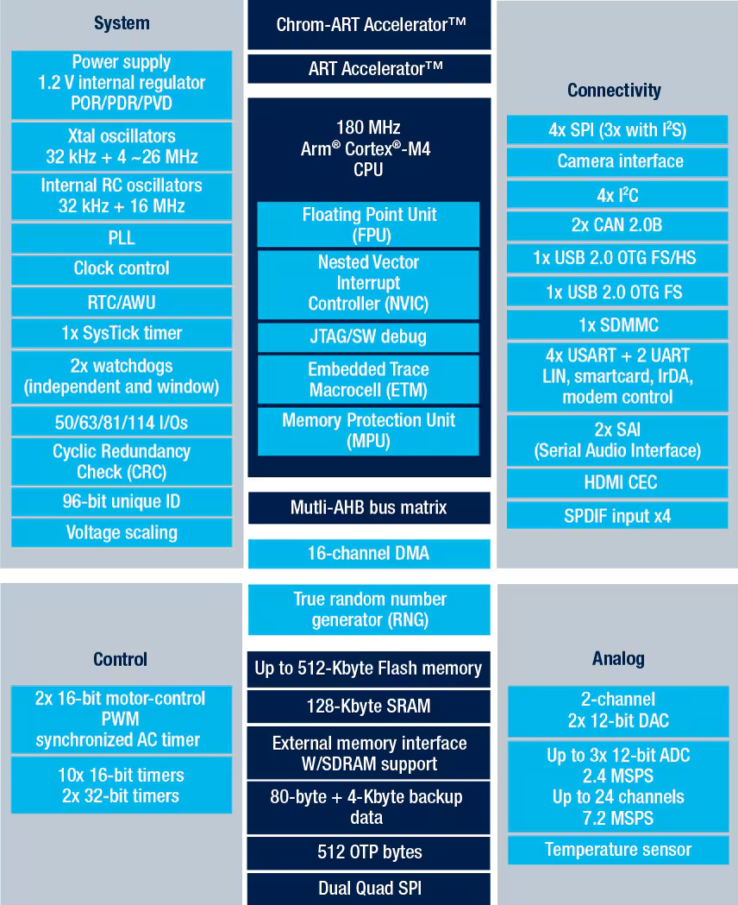
รูป: บล็อกไดอะแกรมแสดงองค์ประกอบภายในของชิป STM32F446RET6 (Source: STMicroelectronics)
▷ ขั้นตอนการใช้งาน STM32Cube for VS Code#
ถัดไปเป็นขั้นตอนการติดตั้งและใช้งาน STM32Cube for VS Code (ใช้งานสำหรับระบบปฏิบัติการ Windows 11)
ให้ติดตั้ง VS Code IDE ให้พร้อมใช้งานก่อน โดยดาวน์โหลดได้จาก:
และศึกษาการติดตั้งใช้งานได้จาก:
ขั้นตอนการดำเนินการ
- เปิดโปรแกรม Visual Studio Code (VS Code) จากนั้นไปที่เมนู Extensions และค้นหา STM32Cube for VS Code แล้วคลิกปุ่ม Install เพื่อติดตั้งส่วนขยาย
- หลังจากติดตั้งเสร็จ ให้คลิกเลือกไอคอน STM32Cube for VS Code ที่แถบด้านซ้ายของหน้าต่าง VS Code
- คลิกเลือกคำสั่ง Launch STM32CubeMX เพื่อสร้างโปรเจกต์ใหม่ โดยใช้โปรแกรม STM32CubeMX ในโหมด Graphical User Interface (GUI) การสร้างโค้ดจะทำผ่าน STM32CubeMX ก่อน จากนั้นจึงนำโฟลเดอร์โปรเจกต์มาเปิดใน VS Code
- ทำการตั้งค่าการใช้งานสำหรับบอร์ด Nucleo-F446RE (เลือกเป็นบอร์ดตัวอย่างในการใช้งาน) เช่น
- การตั้งค่าใน Project Manager เช่น
- ตั้งชื่อโปรเจกต์ (Project Name)
- เลือกใช้ GCC สำหรับ Compiler/Linkler
- เลือก CMake สำหรับ Toolchain/IDE
- การกำหนดแหล่งกำเนิดสัญญาณนาฬิกา (Clock Source) ในส่วนที่เรียกว่า Cloock Configuration
- การตั้งค่าความถี่การทำงานของ CPU
- การเลือกใช้แหล่งที่มาของสัญญาณ Clock เช่น การเลือกใช้สัญญาณ Clock จากภายนอก
- การตั้งค่าความถี่ของระบบบัสสำหรับอุปกรณ์รอบข้าง เช่น AHB และ APB1/APB2
- เลือกเปิดใช้งาน Peripherals ตามตัวอย่างของ STM32CubeMX เช่น
SYS(System) เกี่ยวข้องกับการทำงานของชิปโดยร่วม เช่น การเลือกโหมดการดีบักแบบ SWD และการตั้งค่า System Tick Timer (SysTick)RCC(Reset and Clock Control) ใช้สำหรับกำหนดแหล่งกำเนิดสัญญาณนาฬิกาและการกระจายสัญญาณนาฬิกาภายในระบบ เช่น การเลือกใช้งาน HSE (High-Speed Clock, Bypass Clock Source) ความถี่ 8MHz นำไปผ่านวงจร PLL เพื่อให้ได้ความถี่ที่สูงขึ้นGPIO(สำหรับ Onboard LED / PA5 pin และ Push Button / PC13 pin) การเปิดใช้งานอินเทอร์รัพท์ สำหรับ External Interrupt (EXTI)USART2(สำหรับรับส่งข้อมูลบิตอนุกรมแบบ Asynchronous และใช้ขา PA2/PA3 สำหรับสัญญาณ TX / RX )
- การตั้งค่าใน Project Manager เช่น
- บันทึกโปรเจกต์เป็นไฟล์
.iocโดยกำหนดชื่อโปรเจกต์และเลือกไดเรกทอรีสำหรับจัดเก็บไฟล์ - กดปุ่ม Generate Code เพื่อให้ STM32CubeMX สร้างซอร์สโค้ดและไฟล์ตั้งค่าต่าง ๆ ของโปรเจกต์
- ปิดหรือสลับกลับจากหน้าต่าง STM32CubeMX มาที่ VS Code IDE จากนั้นเลือกเมนู File → Open Folder และเปิดโฟลเดอร์ของโปรเจกต์ที่ได้สร้างไว้
- ทำขั้นตอน Build โดยใช้ CMake หากคอมไพล์โค้ดได้สำเร็จ ถือว่า ได้สร้างโปรเจกต์ให้พร้อมใช้งานแล้ว
- กดปุ่ม
Ctrl+Shift+Pแล้วค้นหาดูคำสั่งที่เริ่มต้นด้วย "CMake: Build"
- กดปุ่ม
- แก้ไขโค้ดในไฟล์
main.cและทำขั้นตอน Build อีกครั้ง - อัปโหลดไฟล์
.elfไปยังบอร์ด Nucleo และทำขั้นตอน On-Chip Debugging- กดปุ่ม
Ctrl+Shift+Pแล้วค้นหาดูคำสั่งที่เริ่มต้นด้วย > Run and Debug: Focus on STM32Cube Devices and Boards View (หรือกดปุ่มCtrl+Shift+D)
- กดปุ่ม
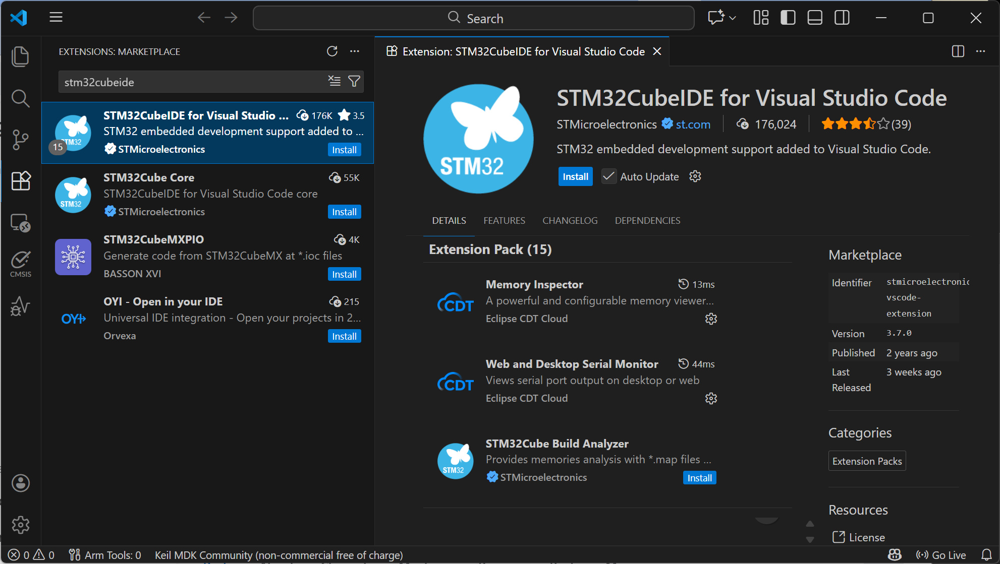
รูป: ค้นหาและติตตั้ง STM32Cube for VS Code
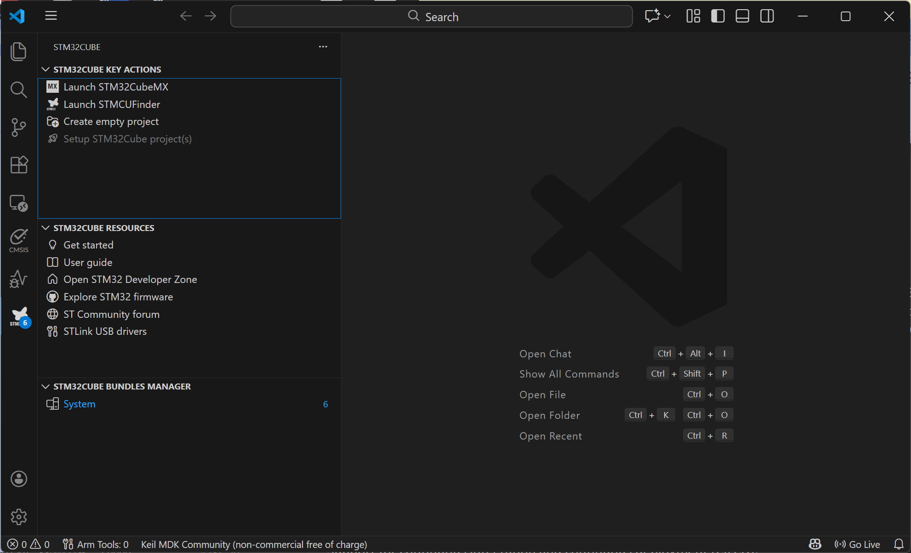
รูป: เปิดใช้งาน STM32CubeMX
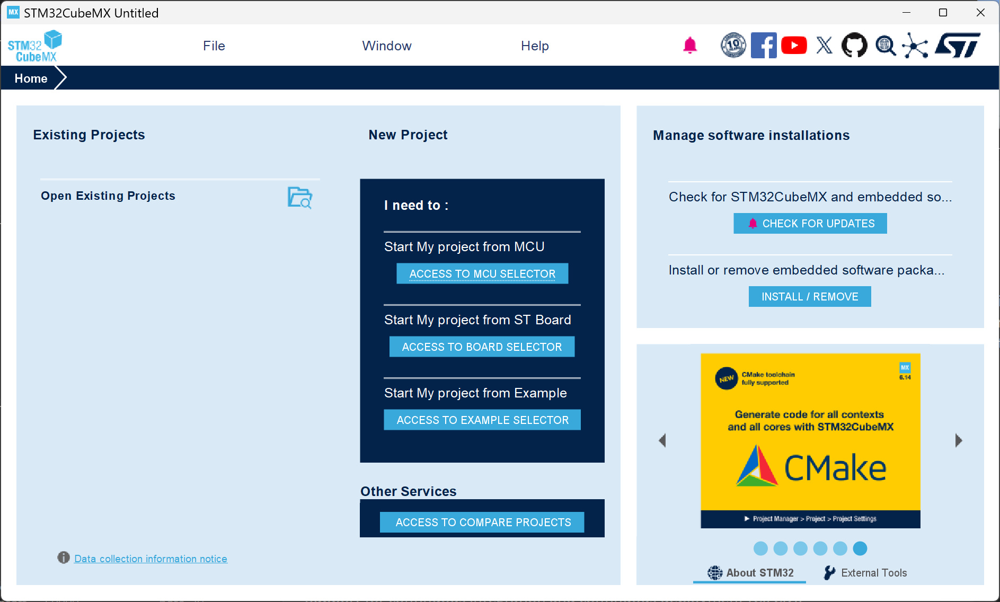
รูป: หน้าต่างเริ่มต้นของ STM32CubeMX
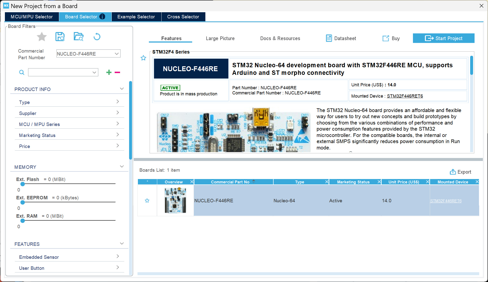
รูป: เลือกสร้างโปรเจกต์ใหม่สำหรับบอร์ด Nucleo F446RE
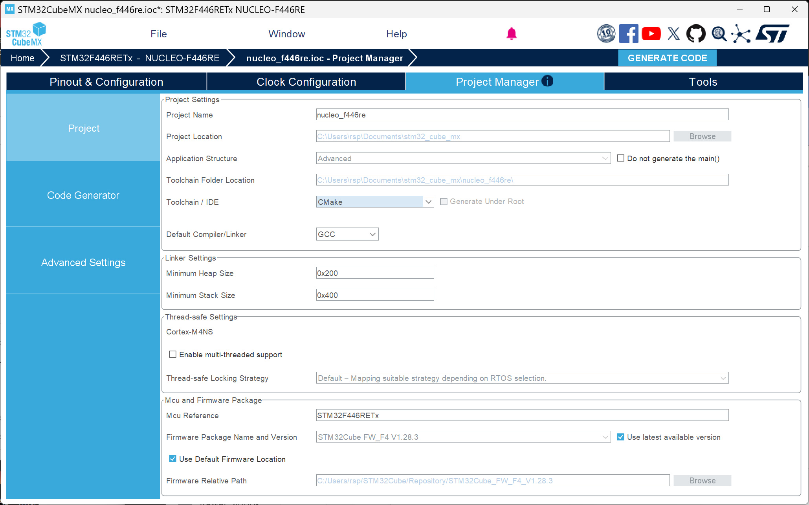
รูป: ตัวอย่างการตั้งค่าใน Project Manager (ตั้งชื่อโปรเจกต์ และเลือกไดเรกทอรี เลือกใช้ GCC Compiler ร่วมกับ CMak)
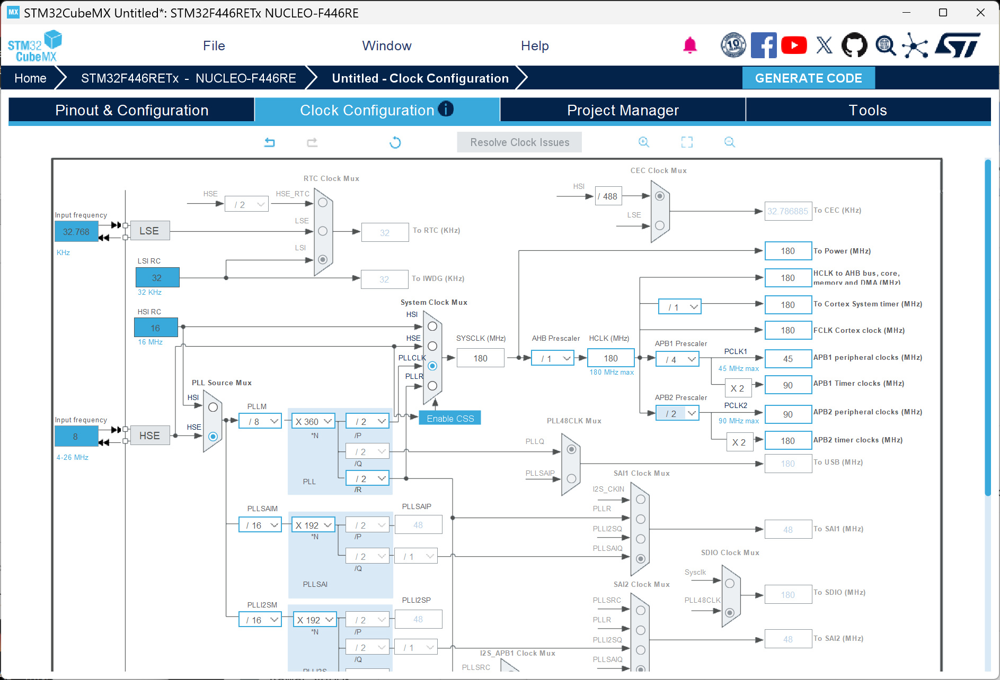
รูป: ตัวอย่างการตั้งค่าในส่วนที่เรียกว่า Clock Configuration (เลือกสัญญาณอินพุต CLK 8MHz เข้าทาง HSE และไปผ่านวงจร PLL)
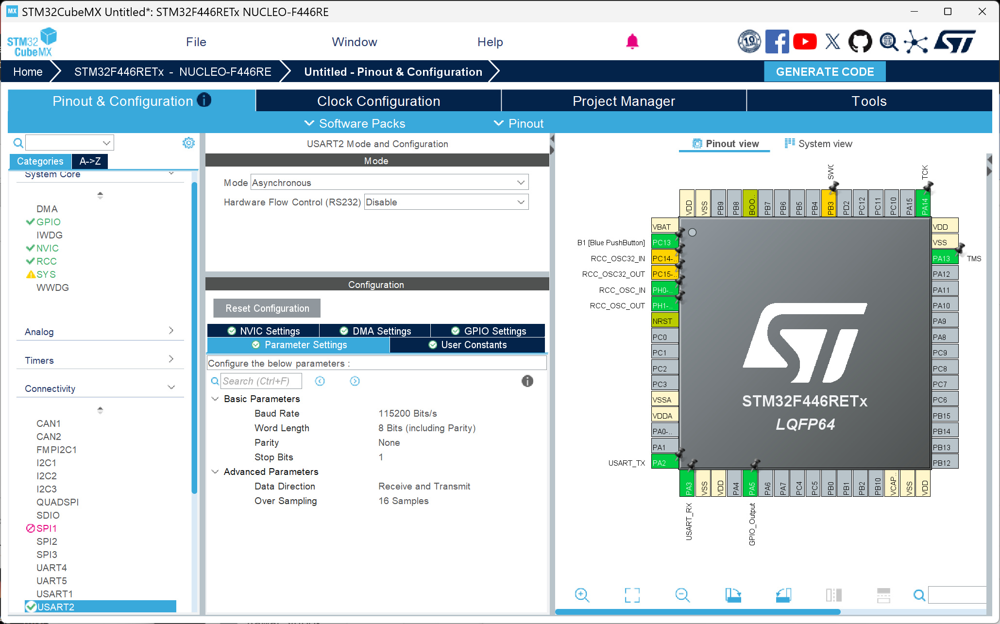
รูป: ตรวจสอบการตั้งค่าสำหรับ USART2
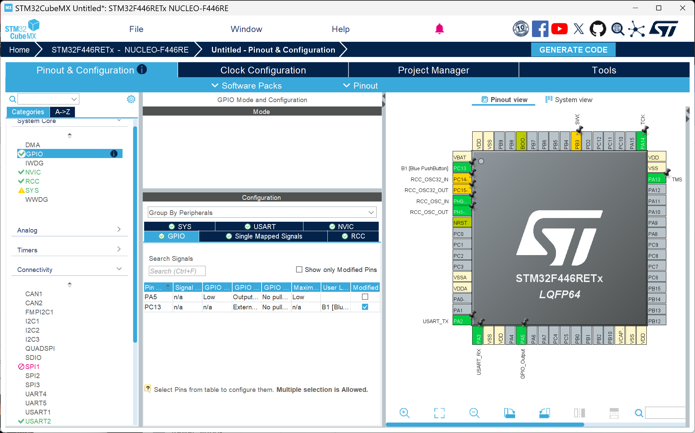
รูป: ตรวจสอบการตั้งค่าสำหรับ GPIO
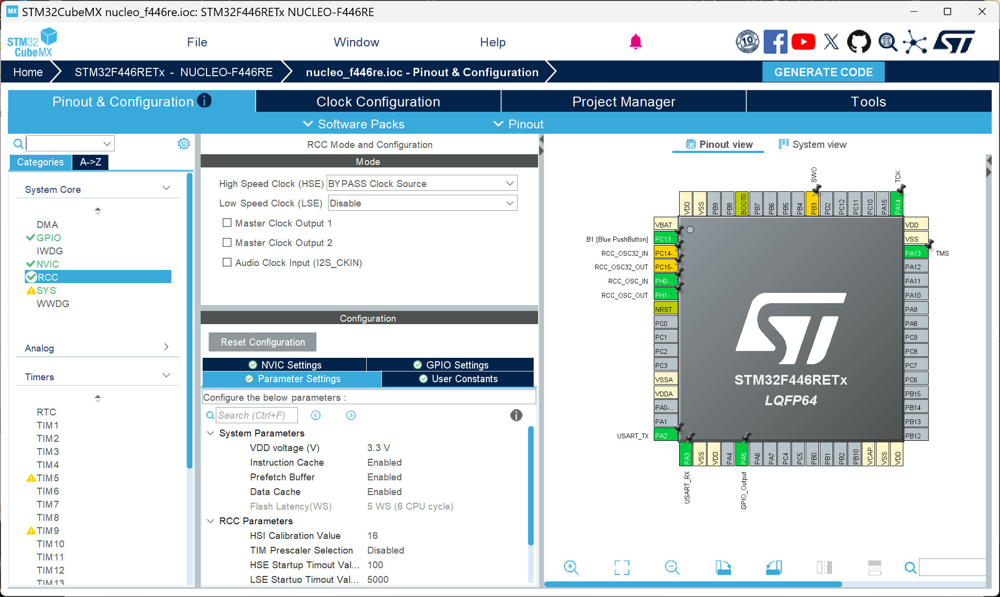
รูป: ตรวจสอบการตั้งค่าสำหรับ RCC
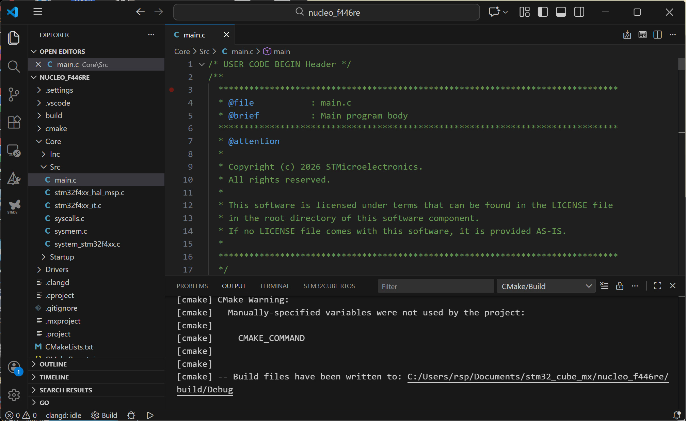
รูป: เปิดโปรเจกต์ที่ได้จาก STM32CubeMX ใน VS Code
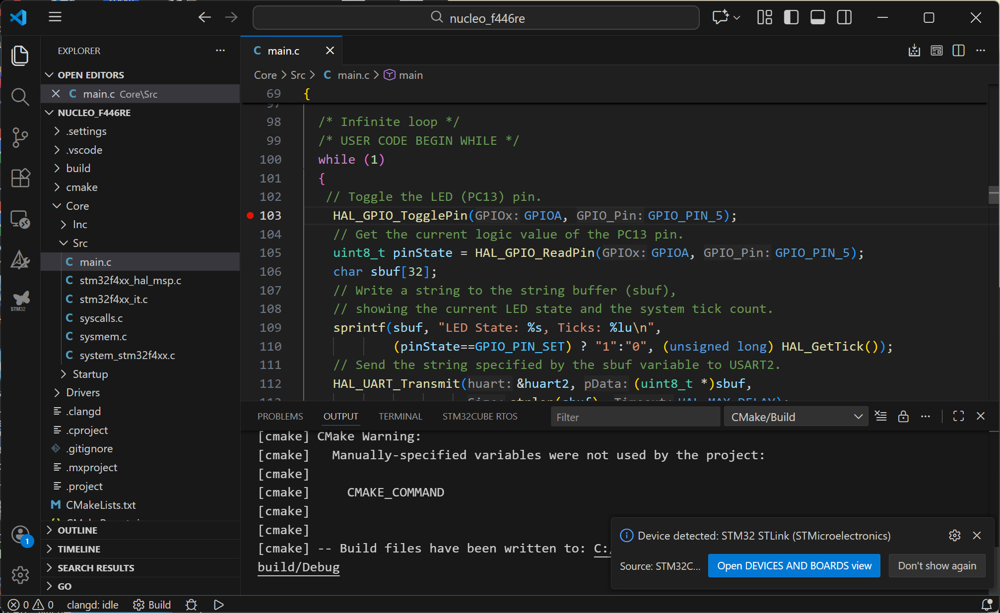
รูป: ทำขั้นตอน Build
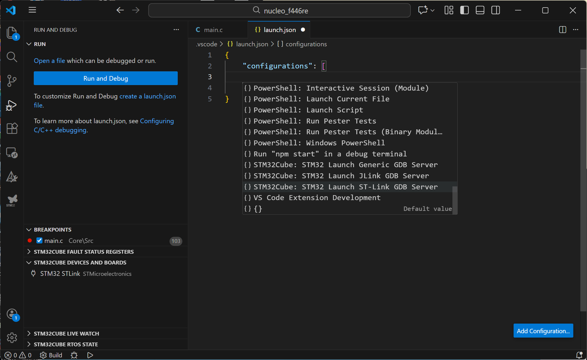
รูป: ตั้งค่าการใช้งาน ST-Link Probe เมื่อมีการเชื่อมต่อบอร์ด Nucleo กับคอมพิวเตอร์ของผู้ใช้
และให้ตรวจสอบการตั้งค่าในไฟล์ .vscode/launch.json เพื่อตั้งค่าการใช้งานสำหรับ
"STM32Cube: STM32 Launch ST-Link GDB Server"
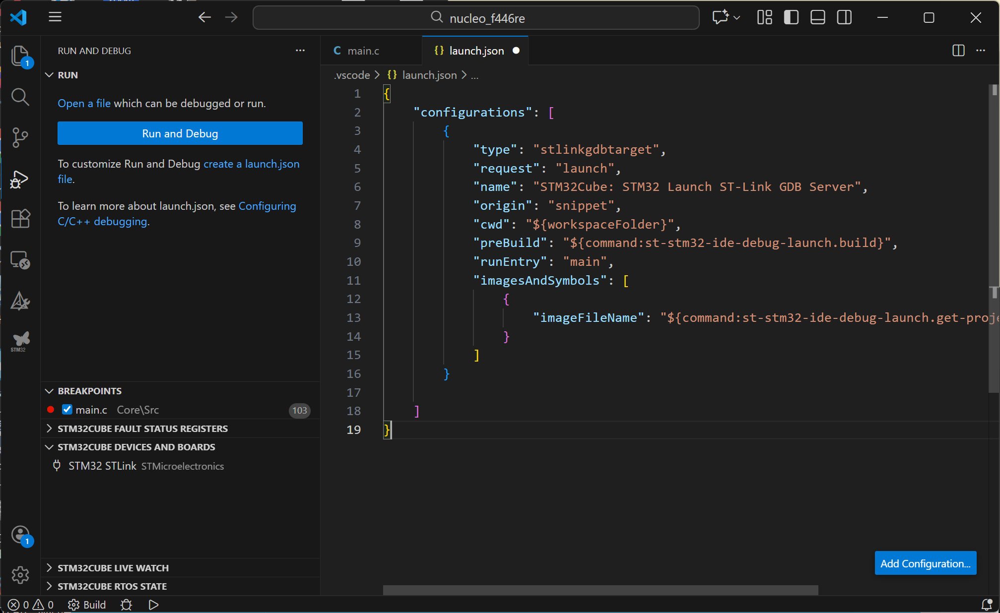
รูป: ทำคำสั่ง > Run and Debug: Focus on STM32Cube Devices and Boards View
(หรือกดปุ่ม Ctrl+Shift+D) แล้วจะมีรูป Icon สำหรับการรันและดีบัก อยู่ในแถบเครื่องมือทางซ้าย
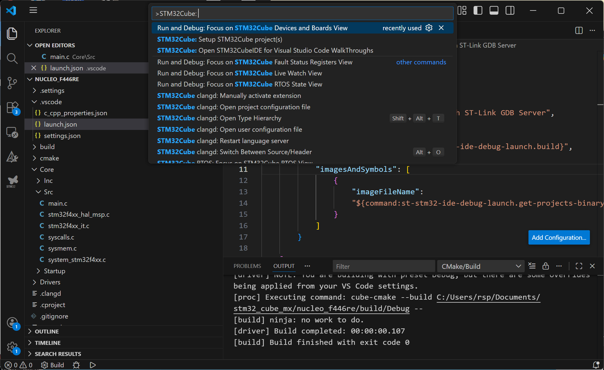
รูป: เมื่อกดปุ่มลูกศรเพื่อทำขั้นตอน RUN AND DEBUG โดยเลือกใช้ "STM32Cube: STM32 Launch ST-Link GDB Server"
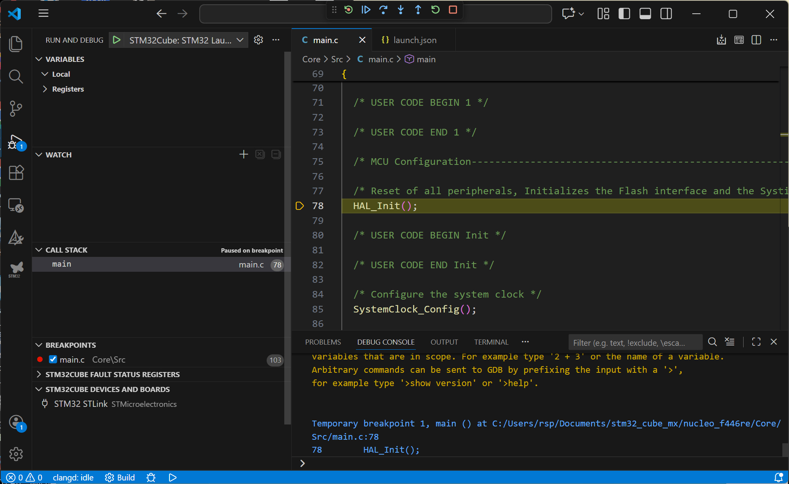
รูป: การทำงานในโหมด ST-Link GDB Server ซึ่งสามารถเชื่อมต่อกับบอร์ด Nucleo-F446RE ได้สำเร็จ
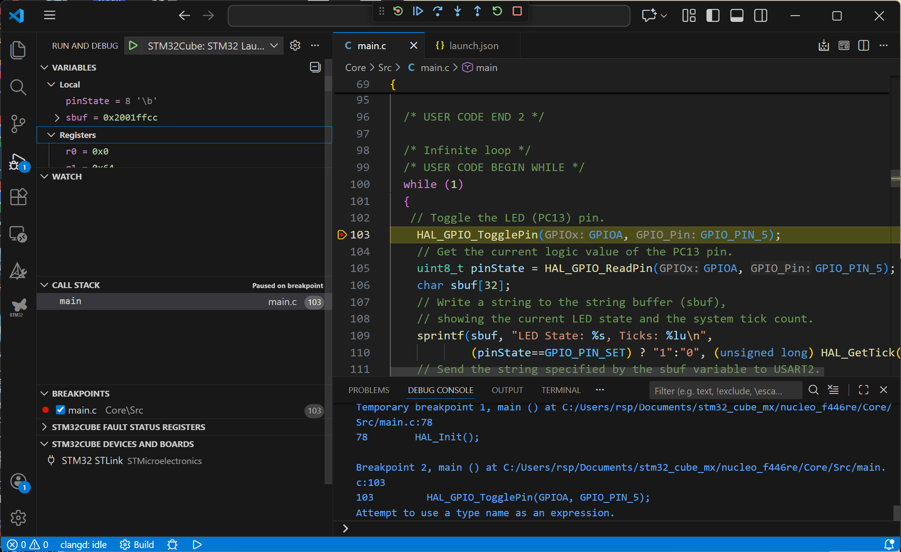
รูป: การหยุดชั่วคราวตามตำแหน่ง Breakpoint ในซอร์ดโค้ด main.c ตามที่ได้เลือกไว้
ตัวอย่างโค้ดบางส่วนในไฟล์ main.c เพื่อทำให้ LED กระพริบ และมีการส่งข้อความออกไปทาง USART2
/* Infinite loop */
/* USER CODE BEGIN WHILE */
while (1)
{
// Toggle the LED (PA5) pin.
HAL_GPIO_TogglePin(GPIOA, GPIO_PIN_5);
// Get the current logic value of the PC13 pin.
uint8_t pinState = HAL_GPIO_ReadPin(GPIOA, GPIO_PIN_5);
char sbuf[32];
// Write a string to the string buffer (sbuf),
// showing the current LED state and the system tick count.
sprintf(sbuf, "LED State: %s, Ticks: %lu\n",
(pinState==GPIO_PIN_SET) ? "1":"0", (unsigned long) HAL_GetTick());
// Send the string specified by the sbuf variable to USART2.
HAL_UART_Transmit(&huart2, (uint8_t *)sbuf,
strlen(sbuf), HAL_MAX_DELAY);
// Delay for 500 msec.
HAL_Delay(500);
/* USER CODE END WHILE */
/* USER CODE BEGIN 3 */
}
/* USER CODE END 3 */
ตัวอย่างไฟล์ .vscode/launch.json
{
"configurations": [
{
"type": "stlinkgdbtarget",
"request": "launch",
"name": "STM32Cube: STM32 Launch ST-Link GDB Server",
"origin": "snippet",
"cwd": "${workspaceFolder}",
"preBuild": "${command:st-stm32-ide-debug-launch.build}",
"runEntry": "main",
"imagesAndSymbols": [
{
"imageFileName":
"${command:st-stm32-ide-debug-launch.get-projects-binary-from-context1}"
}
]
}
]
}
▷ กล่าวสรุป#
บทความนี้ได้นำเสนอขั้นตอนการติดตั้งและใช้งาน STM32Cube for VS Code และทดลองสร้างโปรเจกต์ด้วย STM32CubeMX สำหรับบอร์ด Nucleo-F446RE และสาธิตการรันและดีบักโค้ด เมื่อทดสอบด้วยบอร์ดไมโครคอนโทรลเลอร์
This work is licensed under a Creative Commons Attribution-ShareAlike 4.0 International License.
Created: 2026-01-09 | Last Updated: 2026-01-09